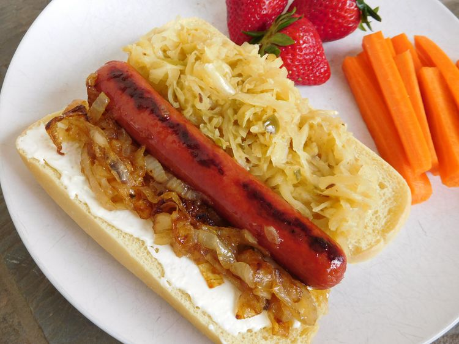

HOTDOG

Description
On the streets of Seattle, after the bars close, and during sporting events, these are a local
favorite--warm cream cheese spread on your favorite hotdog!
Ingredients
- ¼ cup butter
- 1 Walla Walla or other sweet onion, thinly sliced
- 1 (4 ounce) package cream cheese
- 4 hot dogs, or your favorite sausages
- 4 hot dog buns
- brown mustard
- Cheeses
- 1 cup sauerkraut
Steps
- Preheat grill or grill pan for medium-high heat.
- Melt butter in a skillet over medium heat. Add onions, and cook slowly until the onions have softened and
turned deep brown, about 15 minutes. Warm the cream cheese over low heat in a small skillet until very soft.
- Grill hot dogs until well browned. Lightly grill hot dog buns on both sides.
- To assemble cheese dogs, spread warm cream cheese on toasted hot dog bun, add hot dog or sausage, top with onions,
mustard and sauerkraut, if desired.